6.2 Kontextfreie Grammatiken und Kellerautomaten
Theorem 6.2.1 Zu jeder kontextfreien Grammatik $G = (\Sigma, N, S, P)$ gibt es einen Kellerautomaten $M = (\Sigma, Q, \Gamma, \qstart, \delta)$, der die gleiche Sprache akzeptiert, also $L(G) = L(M)$.
Beweis. Der Beweis ist vergleichsweise einfach, weil wir die Grammatik eins zu eins in Automatentransitionen übersetzen können. Die Idee ist, dass die Symbole auf dem Stack, von unten nach oben gelesen, zu jedem Zeitpunkt eine Wortform bilden, aus der der noch nicht gelesene Teil des Restwortes ableitbar ist. Wenn oben auf dem Stack also ein Terminalsymbol $x$ liegt und $x$ auch das nächste Inputzeichen ist, dann poppen wir $x$ vom Stack und lesen $x$, d.h. schieben den Lesekopf um ein Zeichen nach rechts; der Stack ist von $x \alpha$ auf $\alpha$ geschruft und das Restwort von $xw$ auf $w$; wenn also $x\alpha \Rightarrow^* xw$ galt, so gilt nun immer noch $\alpha \Rightarrow^* w$. Wenn ein Nichtterminal $X$ oben auf dem Stack liegt, dieser also die Form $X \alpha$ hat, und $w$ das Restwort ist, dann gilt also $X \alpha \Rightarrow^* w$. Der Automat rät nun nichtdeterministisch die erste in der Ableitung angewandte Produktion $X \rightarrow \beta$, löscht $X$ vom Stack und pusht $\beta$. Der Stack ist nun $\beta \alpha$, und $\beta \alpha \Rightarrow^* w$. Entscheidend ist der Nichtdeterminismus: es gibt eine korrekte Produktion $X \rightarrow \beta$, die schlussendlich zu $w$ führt; der Automat kann also diese Transition anwenden. Formaler: Die Zustände des Automaten sind $Q = \{\qstart, q_1, \qend\}$, das Stackalphabet ist \(\Gamma = \Sigma \cup N \cup \{\$\}\) und die Transitionsregeln sind
$$
\begin{align*}
(q_1, x)&\step{x} (q_1, \epsilon) \quad \textnormal{für jedes $x \in \Sigma$}\\
(q_1, A)&\step{\epsilon} (q_1, \beta) \quad \textnormal{für jede Produktion $A \rightarrow
\beta$}\\ \hline
(\qstart, \epsilon)&\step{\epsilon} (q_1, S \$) \\
(q_1, \$)&\step{\epsilon} (\qend, \epsilon)
\end{align*}
$$
Auf einen formalen Beweis, dass $L(M) = L(G)$ ist, verzichte ich an dieser Stelle. Besser als Sipser in seinem Lehrbuch Introduction to the Theory of Computing könnte ich das eh nicht.A\(\square\)
Beispiel 6.2.2 Betrachten wir die Grammatik
$$
\begin{align*}
S&\rightarrow A \ | \ B \ | \ C \ | \ \epsilon \\
A&\rightarrow \texttt{\{} B \texttt{\}} S \\
B&\rightarrow \texttt{[} C \texttt{]} S \\
C&\rightarrow \texttt{(} A \texttt{)} S \ | \ \texttt{()}S \\
\end{align*}
$$
Ein Wort in der erzeugten Sprache wäre zum Beispiel
{()()}()
Schreiben wir nun einen Kellerautomaten, der diese
Sprache akzeptiert. Die Idee ist, dass wir Terminalsymbole und
Nichtterminalsymbole auf den Stack legen. Ein
[
oben auf dem
Stack bedeutet dann
ich will jetzt sofort ein
[lesen;
ein
Nichtterminal wie $A$ oben auf dem Stack bedeutet, dass wir als
nächstes ein von $A$ ableitbares Wort, also ein
$A \rightarrow w \in \Sigma^*$ lesen wollen. Um ein $w$ mit
$A \rightarrow w$ lesen zu können, müssen wir
sofort
ein
{
lesen, dann ein Wort $v$ mit
$B \rightarrow v$,
dann ein
}
und
so weiter. Wir können das also im Automaten implementieren, indem
wir $A$ vom Stack löschen und durch $\texttt{\{} B \texttt{\}} S$
auf den Stack legen, mit dem linkesten Symbol zuoberst. Wenn wir
für ein Nichtterminal mehrere Regeln haben, also z.B.
$X \rightarrow \alpha$ und
$X \rightarrow \beta$,
dann können
ein $X$ auf dem Stack sowohl durch $\alpha$ als auch durch
$\beta$ ersetzen. Hierfür benötigen wir den Nichtdeterminismus.
Beachten Sie, dass wir ein Nichtterminal grundsätzlich immer
durch die entsprechende rechte Seite ersetzen können, egal, was
das nächste Zeichen ist; es wird im Automaten also ein
$\step{\epsilon}$-Übergang
sein. Konkret also bauen wir für
obige Grammatik die folgenden Automatentransitionen:
$$
\begin{align*}
(q_1, S)&\step{\epsilon} (q_1, A) \\
(q_1, S)&\step{\epsilon} (q_1, B) \\
(q_1, S)&\step{\epsilon} (q_1, C) \\
(q_1, S)&\step{\epsilon} (q_1, \epsilon) \\
\hline
(q_1,A)&\step{\epsilon} (q_1, \texttt{\{} B \texttt{\}} S) \\
\hline
(q_1,B)&\step{\epsilon} (q_1, \texttt{[} C \texttt{]} S) \\
\hline
(q_1,C)&\step{\epsilon} (q_1, \texttt{(} A \texttt{)} S) \\
(q_1,C)&\step{\epsilon} (q_1, \texttt{(} \texttt{)} S) \\
\hline
(q_1,\texttt{\{})&\step{\texttt{\{}} (q_1, \epsilon) \\
(q_1,\texttt{\}})&\step{\texttt{\}}} (q_1, \epsilon) \\
(q_1,\texttt{[})&\step{\texttt{[}} (q_1, \epsilon) \\
(q_1,\texttt{]})&\step{\texttt{]}} (q_1, \epsilon) \\
(q_1,\texttt{(})&\step{\texttt{(}} (q_1, \epsilon) \\
(q_1,\texttt{)})&\step{\texttt{)}} (q_1, \epsilon) \\
\end{align*}
$$
Dies ist völlig mechanisch und benötigt kein Nachdenken. Wie
fangen wir an? Wir legen anfangs ein $S$ auf den leeren Stack.
Wenn dieses $S$ abgearbeitet ist und das Wort zu Ende ist,
akzeptieren wir, und nur dann. Um festzustellen, dass wir
wirklich den Stack ganz leer gemacht haben, brauchen wir die
Markierung
$.
Also:
$$
\begin{align*}
(\qstart, \epsilon) \step{\epsilon} (q_1, S \$) \\
(q_1, \$) \step{\epsilon} (\qend, \epsilon)
\end{align*}
$$
Unsere Maschine hat also nur drei Zustände: $\qstart$, $q_1$ und $\qend$, welches der akeptierende Endzustand ist. Beachten Sie, dass es von $\qend$ aus keine ausgehenden Transitionen gibt; sollte es also nach Erreichen von $\qend$ noch weitere Zeichen im Eingabewort geben, so kann der Automat keine weiteren Schritte durchführen, was einem reject entspricht. Erreichen des Zustandes $\qend$ führt also nur dann zu einem accept, wenn dies am Ende des Wortes geschieht.
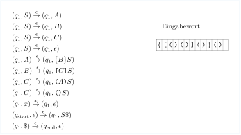
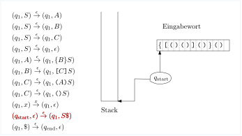
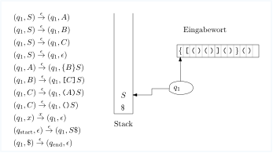
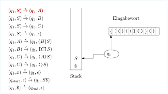
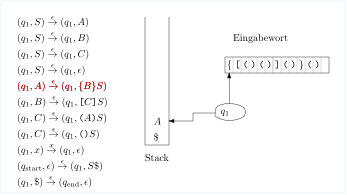
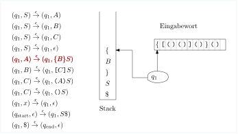
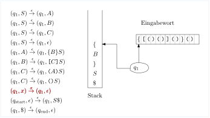


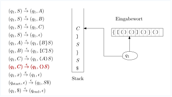

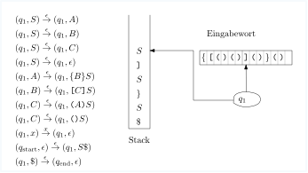

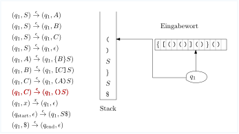
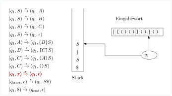
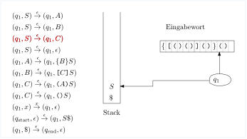
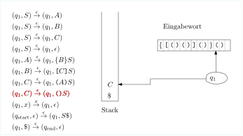
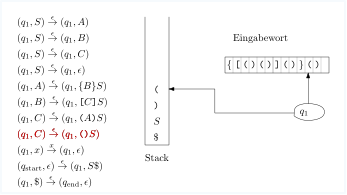
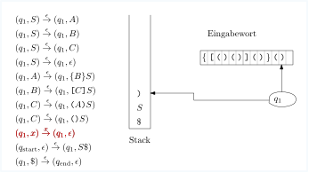
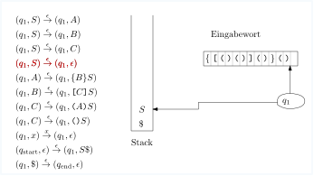
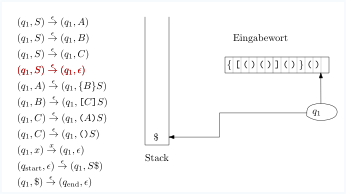
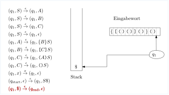
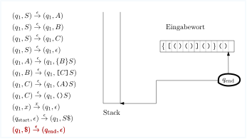
Die Gegenrichtung ist schwieriger.
Theorem 6.2.3 Zu jedem Kellerautomaten $M$ gibt es eine kontextfreie Grammatik $G$ mit $L(M) = L(G)$.
Ich folge hier im Wesentlichen dem Beweis aus Sipsers Kapitel 2.
Beweis. Sei $M = (\Sigma, Q, \Gamma, \qstart, F, \delta)$ der Kellerautomat. Als erstes führen wir drei Schönheitsoperation durch:
-
Der Automat hat einen einzigen akzeptierenden Zustand $\qend$. Dies können wir einfach durch $\epsilon$ -Übergänge erreichen.
-
Der Automat leert den Stack, bevor er akzeptiert. Dies können wir z.B. dadurch erreichen, dass wir anfangs ein \(\$\) auf den Stack legen und am Ende den Stack poppen, bis wir \(\$\) gepoppt haben.
-
Für jede Transition
$$ \begin{align*} (p, x) \step{a} (q, y) \end{align*} $$ist genau eines von $x,y$ leer (und das andere ist genau ein Stacksymbol aus $\Gamma$). Eine Transition der Form $(p, \epsilon) \step{a} (q, x)$ nennen wir eine Push-Operation, eine der Form $(p, y) \step{a} (q, \epsilon)$ nennen wir eine Pop-Operation. Der Automat kann in diese Form gebracht werden, indem wir Zwischenzustände einführen:
$$ \begin{align*} (p, x) \step{a} (q, y) \textnormal { wird ersetzt durch die zwei Transitionen } (p, x) \step{a} (p', \epsilon) \textnormal { und }(p', \epsilon) \step{a} (q, y) \\ (p, \epsilon) \step{a} (q,\epsilon) \textnormal { wird ersetzt durch die zwei Transitionen } (p, \epsilon) \step{a} (p', \bigstar) \textnormal { und }(p', \bigstar) \step{a} (q, \epsilon) \ . \end{align*} $$Im zweiten Falle pushen wir also pro Forma ein ansonsten irrelevantes Symbol $\bigstar$ auf den Stack, um es gleich darauf runterzupoppen.
Wenn nun der Automat die eben beschriebene Form hat, so ist die Idee, dass wir für jedes Paar $p,q$ von Zuständen ein Nichtterminalsymbol $A_{pq}$ einführen, dass genau die Wörter $w$ ableiten kann, für die
$$
\begin{align*}
(p, \epsilon) \Step{w}^* (q,\epsilon)
\end{align*}
$$
gilt, die also den Automaten von $p$ nach $q$ bringen können, wobei der Stack am Anfang und am Ende leer ist. Dies kann auf zwei Weisen geschehen:
-
Fall 1: in der Konfigurationsfolge von $(p, \epsilon) \Step{w}^* (q,\epsilon)$ wird der Stack zwischendurch auch mal leer, und zwar nachdem der Präfix $u$ des Wortes $w = uv$ gelesen ist, und der Automat ist zu diesem Zeitpunkt im Zustand $r$. Also:
$$ \begin{align*} (p, \epsilon) \Step{u}^* (r,\epsilon) \Step{v}^* (q,\epsilon) \ . \end{align*} $$Es sollte also (wenn unsere Konstruktion erfolgreich ist) gelten, dass $A_{pr} \Rightarrow^* u$ und $A_{rq} \Rightarrow^* v$. Wir führen daher die Grammatikproduktion
$$ \begin{align*} A_{pq} \rightarrow A_{pr} A_{rq} \end{align*} $$ein.
-
Fall 2: in der Konfigurationsfolge von $(p, \epsilon) \Step{w}^* (q,\epsilon)$ ist der Stack zwischendurch nie leer. Das heißt wiederum, dass das im ersten Schritt gepushte Stacksymbol $x$ am Ende gepoppt wird, also $w = avb$ mit
$$ \begin{align*} (p, \epsilon) \step{a} (r, x) \Step{v}^* (s,x) \step{b} (q,\epsilon) \end{align*} $$Hier ist wichtig zu wissen, dass die erste Operation eine Push-Operation sein muss: Pop kann sie eh nicht sein, und die Möglichkeit $(p,\epsilon) \step{a} (r, \epsilon)$ haben wir durch unsere Schönheitsoperationen ausgeschlossen. Des weiteren ist zu beachten, dass in der Konfigurationsfolge von $(r, x) \Step{v}^* (s,x)$ der Stack nie leer wird. Keine Transition "liest" also das unterste Zeichen $x$ -- denn dann müsste nacha Schönheitsoperation das $x$ ja gepoppt werden und der Stack würde vollständig geleert. In anderen Worten: die Konfigurationsfolge wäre auch dann gültig, wenn Anfangs- und Endstack nicht $[x]$ sondern $\epsilon$, also der leere Stack wäre:
$$ \begin{align*} (r, \epsilon) \Step{v}^* (s,\epsilon) \ . \end{align*} $$Wenn unsere Konstruktion Erfolg hat, hieße das also $A_{rs} \Rightarrow^* v$ und somit ist
$$ \begin{align*} A_{pq} \rightarrow a A_{rs} b \end{align*} $$eine gültige Regel.
Schlussendlich führen wir noch die offensichtlich korrekten Regeln $A_pp \rightarrow \epsilon$ ein, da ja $(p, \epsilon) \Step{\epsilon}^* (p, \epsilon)$ offensichtlich gilt (da ja $\Step{}^*$ auch die aus null Übergangen bestehende Konfigurationsfolge erlaubt). Zusammenfassend gesagt besteht unsere Grammatik $G$ aus drei unterschiedlichen Typen von Regeln:
$$
\begin{align*}
A_{pp}&\rightarrow \epsilon \textnormal{ für jeden Zustand \(p \in Q\)} \\
A_{pq}&\rightarrow A_{pr}A_{rq} \textnormal{ für alle Zustände $p,q,r \in Q$} \\
A_{pq}&\rightarrow a A_{rs} b \textnormal{ für alle Pushp-Pop-Paare
$(p,\epsilon) \step{a} (r,x)$, $(s,x) \step{b} (q,\epsilon)$ von Transitionen}
\end{align*}
$$
Das Startsymbol der Grammatik ist natürlich $A_{\qstart, \qend}$. Auch hier verzichte ich auf einen formalen Beweis, dass $L(G)=L(M)$ gilt. Der Beweis verwendet (wenig überraschend) Induktion über die Länge der Ableitung bzw. Induktion über die Länge der Konfigurationsfolge und ist in Sipsers Lehrbuch im Detail erklärt.A\(\square\)
Beispiel 6.2.4 Wir betrachten die Sprache
$$
\begin{align*}
a^m b (a|b)^* b a^m
\end{align*}
$$
Diese ist nicht regulär, da der Präfix und der Suffix aus $a$ die gleiche Länge $m$ haben müssen. Wir bauen zuerst einen Kellerautomaten und übersetzen den dann entsprechend dem Schema aus dem letzten Theorem in eine Grammatik. Dann vergleichen wir die entstandene Grammatik mit der, die wir per Hand aus der obigen Sprachbeschreibung bauen würden. Unser Automat hat einen Zustand $q_1$, in welchem er führenden $a$ 's auf den Stack legt und einen Zustand $q_3$, in welchem er die $a$'s am Ende liest und vom Stack poppt. Zwischen den beiden $b$'s in der Mitte ist er in einem Zustand $q_2$, in welchem er die Eingabesymbole mehr oder weniger ignoriert. Der Automat muss nichtdeterministisch sein, da er "erraten" muss, welches $b$ das letzte ist, weil er dann mit dem Stack-Poppen beginnen muss.
$$
\begin{align*}
(\qstart, \epsilon)&\step{\epsilon} (q_1, \$) \\ \hline
(q_1, \epsilon)&\step{a} (q_1, a) \\
(q_1, \epsilon)&\step{b} (q_2, b) \\
\textcolor{red}{(q_2, \epsilon)}&\textcolor{red}{ \step{a} (q_2, \epsilon)} \\
\textcolor{red}{(q_2, \epsilon)}&\textcolor{red}{ \step{b} (q_2, \epsilon)} \\
(q_2, b)&\step{b} (q_3, \epsilon) \\
(q_3, a)&\step{a} (q_3, \epsilon) \\ \hline
(q_3, \$)&\step{\epsilon} (\qend, \epsilon)
\end{align*}
$$
Die beiden rot gefärbten Transitionen benötigen eine
Schönheitsoperation:
$$
\begin{align*}
(q_2, \epsilon)&\step{a} (q'_2, x) \\
(q_2, \epsilon)&\step{b} (q'_2, x) \\
(q'_2, x)&\step{\epsilon} (q_2, \epsilon) \\
\end{align*}
$$
Unsere Zustandsmenge ist also
$Q = \{\qstart, q_1, q_2, q'_2, q_3, \qend\}$.
Rein theoretisch
müssten wir nun für alle Tripel $p,r,q$ von Zuständen eine
Produktion $A_{pq} \rightarrow A_{pr} A_{rq}$ einführen, also
allein hierfür schon $5^3 = 125$ Produktionen. Wir können das
reduzieren, indem wir die im Beweis beschriebene mechanische
Prozedur mit ein wenig selbständigem Denken kombinieren. Die
erste Beobachtung ist, dass wir gar nicht von jedem Zustand zu
jedem kommen können, sondern nur "vorwärts", also wie in diesem
Diagramm:
Nichtterminale wie $A_{31}$ führen wir also gar nicht erst ein. Auch schreiben wir $A_{13}$ statt $A_{q_1q_3}$ und verwenden die Indizes 0 für $\qstart$ und 4 für $\qend$. Als zweite Beobachtung sehen wir, dass man mit leerem Stapel beispielsweise gar nicht von $\qstart$ nach $q_3$ kommt: auf dem Weg dorthin wird ein \(\$\) gepusht und nie gepoppt; gleiches gilt für viele weitere Zustandspaare. Das erweiterte Diagramm hier gibt eine Orientierung. Neben jeden Zustand haben wir schematisch den Stack gemalt:
Die einzigen Nichtterminale sind also die "trivialen" der Form $A_{qq}$ und darüberhinaus
$$
\begin{align*}
A_{04}, A_{13}
\end{align*}
$$
Da man von $\qstart$ zu sich selber und von $\qend$ zu sich selber nur mit dem leeren Wort gelant, ersetzen wir $A_{00}$ und $A_{44}$ sofort durch $\epsilon$. Als Produktionen der Form $A_{pq} \rightarrow A_{pr} A_{rq}$ erhalten wir also:
$$
\begin{align*}
A_{11}&\rightarrow A_{11} A_{11} \\
A_{13}&\rightarrow A_{11} A_{13} \\
A_{13}&\rightarrow A_{13} A_{33} \\
A_{22}&\rightarrow A_{22} A_{22} \\
A_{33}&\rightarrow A_{33} A_{33}
\end{align*}
$$
Schon deutlich besser als die 125 Produktionen, die wir bekämen, wenn wir stur an der Methode im Beweis festhalten würden. Wir brauchen noch Produktionen der Form $A_{pq} \rightarrow a A_{rs} b$. Dafür müssen wir nach Push-Pop-Paaren $(p,\epsilon) \step{a} (r,x)$ , $(s,x) \step{b} (q,\epsilon)$ suchen. Stack-Symbole sind $a, b, x$. Suchen wir also zuerst nach Paaren von Transitionen, die $a$ pushen und poppen.
$$
\begin{align*}
(q_1, \epsilon) \step{a} (q_1, a) \textnormal{ und }
(q_3, a) \step{a} (q_3, \epsilon) \textnormal{ ergibt die Produktion }
A_{13} \rightarrow a A_{13} a
\end{align*}
$$
Das waren die einzigen Transitionen, in denen $a$ gepusht und gepoppt wird. Betrachten wir als nächstes das Stacksymbol $b$ :
$$
\begin{align*}
(q_1, \epsilon) \step{b} (q_2, b) \textnormal{ und }
(q_2, b) \step{a} (q_3, \epsilon) \textnormal{ ergibt die Produktion }
A_{13} \rightarrow b A_{22} b
\end{align*}
$$
Nun zu den Transitionen mit Stacksymbol $x$. Da gibt es zwei Push-Transitionen und eine Pop-Transition, also zwei Paare:
$$
\begin{align*}
(q_2, \epsilon) \step{a} (q'_2, x) \textnormal { und }
(q'_2, x) \step{\epsilon} (q_2, \epsilon) \textnormal{ ergibt die Produktion }
A_{22} \rightarrow a A_{2'2'} \\
(q_2, \epsilon) \step{b} (q'_2, x) \textnormal { und }
(q'_2, x) \step{\epsilon} (q_2, \epsilon) \textnormal{ ergibt die Produktion }
A_{22} \rightarrow b A_{2'2'} \\
\end{align*}
$$
Und schlussendlich die mit Stacksymbol $. Da gibt es eine Push- und eine Pop-Transition:
$$
\begin{align*}
(\qstart, \epsilon) \step{\epsilon} (q_1, \$) \textnormal {und }
(q_3, \$) \step{\epsilon} (\qend, \epsilon) \textnormal{ ergibt die Produktion }
A_{04} \rightarrow A_{13} \\
\end{align*}
$$
Sammeln wir nun alle Produktionen:
$$
\begin{align*}
\textcolor{red}{A_{11}}&\textcolor{red}{\rightarrow A_{11} A_{11}} \\
A_{13}&\rightarrow \textcolor{red}{A_{11}} A_{13} \\
A_{13}&\rightarrow A_{13} \textcolor{red}{A_{33}} \\
A_{22}&\rightarrow A_{22} A_{22} \\
\textcolor{red}{A_{33}}&\textcolor{red}{\rightarrow A_{33} A_{33}} \\ \hline
A_{13}&\rightarrow a A_{13} a \\
A_{13}&\rightarrow b A_{22} b \\
A_{22}&\rightarrow a \textcolor{red}{A_{2'2'}} \\
A_{22}&\rightarrow b \textcolor{red}{A_{2'2'}} \\
A_{04}&\rightarrow A_{13}\\ \hline
\textcolor{red}{A_{00}}&\textcolor{red}{\rightarrow \epsilon} \\
\textcolor{red}{A_{11}}&\textcolor{red}{\rightarrow \epsilon} \\
A_{22}&\rightarrow \epsilon \\
\textcolor{red}{A_{2'2'}}&\textcolor{red}{\rightarrow \epsilon} \\
\textcolor{red}{A_{33}}&\textcolor{red}{\rightarrow \epsilon} \\
\textcolor{red}{A_{44}}&\textcolor{red}{\rightarrow \epsilon} \\
\end{align*}
$$
wobei $A_{04}$ das Startsymbol ist. Wir haben diejenigen Nichtterminale und Produktionen rot markiert, aus denen nur $\epsilon$ hervorgehen kann. Wir können die Grammatik nun entsprechend vereinfachen. Zusätzlich löschen wir $A_{04}$ und ernennen $A_{13}$ zu unserem Startsymbol:
$$
\begin{align*}
A_{22}&\rightarrow A_{22} A_{22} \\
A_{13}&\rightarrow a A_{13} a \\
A_{13}&\rightarrow b A_{22} b \\
A_{22}&\rightarrow a \\
A_{22}&\rightarrow b \\ \hline
A_{22}&\rightarrow \epsilon \\
\end{align*}
$$
Überlegen wir nun, ausgehend von dieser Grammatik, was wir aus dem Startsymbol $A_{13}$ ableiten können. Die einzigen zwei Produktionen mit $A_{13}$ sind $A_{13} \rightarrow a A_{13} a$ und $A_{13} \rightarrow b A_{22}$, also gilt
$$
\begin{align*}
A_{13} \Rightarrow^* a^m b A_{22} b a^m \ .
\end{align*}
$$
Aus $A_{22}$ können wir per Produktion $A_{22} \rightarrow A_{22} A_{22}$ erst einmal alle Wortformem der Form $A_{22}^*$ ableiten; per $A_{22} \rightarrow a \ | \ b \ | \ \epsilon$ dann alle Wortform $(a|b)^*$. Also:
$$
\begin{align*}
A_{13} \Step{}^* a^m b (a|b)^* b a^m \ .
\end{align*}
$$
Die Grammatik erzeugt also die gewünschte Sprache.